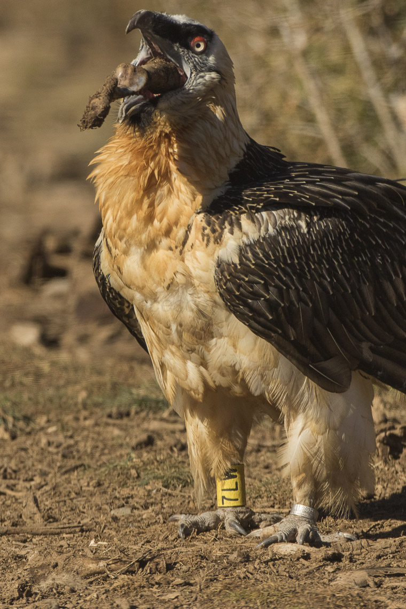
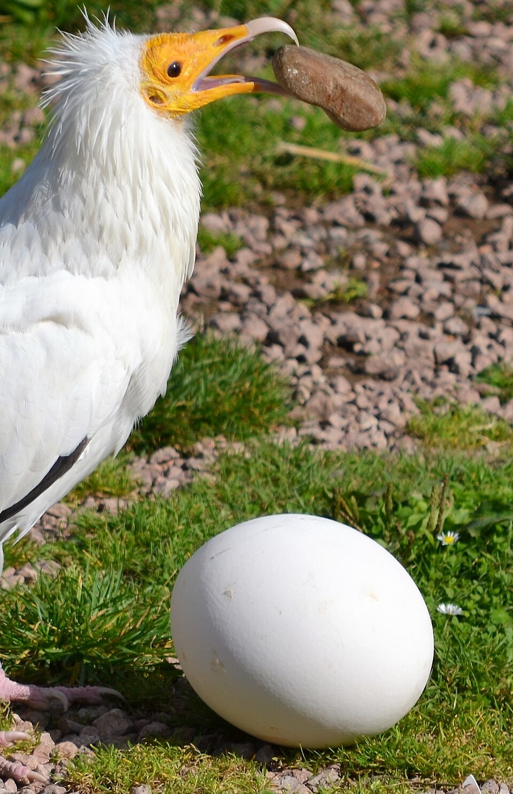

פֶּרֶס pères – bird of prey
Semantic Fields:
Birds
Author(s):
Cees Stavleu *
First published: 2026-05-20
Citation: Cees Stavleu, פֶּרֶס pères – bird of prey,
Semantics of Ancient Hebrew Database (sahd-online.com), 2026
(WORK IN PROGRESS)
Introduction
Grammatical Type: noun masc.
Occurrences: 2x HB (2/0/0); 0x Sir; 0x Qum; 0x inscr. (Total: 2).
- Torah: Lev 11:13; Deut 14:12.
1. Root and Comparative Material
A.1 Root: Many Hebrew dictionaries and commentaries derive the noun פֶּרֶס from the root פרס, meaning ‘to break’ or ‘to tear’.2 In two instances (Mic 3:3; Lam 4:4), some scholars propose that the verbal root פָּרַשׂ represents a variant spelling of פרס.3 However, this hypothesis is not widely accepted, and some dictionaries do not seem to adopt the assumption of such textual corruption by not mentioning these two texts in the lemma פָּרַסָּ.4 In the case of Lamentations 4:4, it is also plausible that that the verb form derives instead from the root meaning ‘to spread out’, a sense attested elsewhere in Lamentations (1:10, 13).5 Despite the uncertainties surrounding these two texts, they will be included in the study for the sake of completeness. In addition to the examples from the Hebrew Bible, there is also a Qumran text in which Clines interprets פָּרַשׂ in a similar manner.6
The root appears in various verbal forms across a range of biblical and Qumran texts.
- Qal פָרֹס in Isaiah 58:7 conveys the meaning ‘to break (bread)’.
- Qal יׅפְרְסוּ וְלאֹ in Jeremiah 16:7 is understood as ‘and they will not break [bread] for them in the morning’.
- Qal וּפָרְשׂוּ in Micah 3:3 is interpreted as ‘to chop into pieces (bones)’.
- Qal פֹּרֵשׂ in Lamentations 4:4 carries the meaning ‘(not) to break (bread)’.
- Qal פרשנו in 4QMMT C line 7 occurs in the (reconstructed) sentence: ‘we separate ourselves (from impurities)’. This passage belongs to the halakhic corpus of the Qumran sect.7 4 QMMT 7 ll. 7-8 contains the following translated text: ‘[ ] We have separated ourselves from the multitude of the people (העם) and from their impurities and from intermingling in their practices and in participating with them in their (practices)’.8 This passage provides the earliest attested use of the root פרש in the sense of withdrawing from the broader community. The term is significant for identifying the Pharisees and for understanding the designation פרושים.9
- Qal participle פורס֯ in 4Q424 1 l. 2 is interpreted by Clines as referring to ‘one who separates’.10 This reading however is uncertain, and alternative interpretations have been suggested.11 Brin notes that the text is truncated, making it impossible to determine the precise referent.12
- In the hiph. stem, forms of פָּרַס occur seven times, in Leviticus 11:3, 4 (2x), 5, 6, 7, and 26, and are typically translated as ‘that has hoofs’.13 Parallel occurrences are found in Deuteronomy 14:6–8, where the term appears four times (verses 6, 7 [2x], 8), likewise meaning ‘that has hoofs’.
- Additionally, in Psalm 69:32, the masculine participial form מַפְִִרִיס is translated as ‘that has horns’.
There are also occurrences of the nominal form פַּרְסׇה, which consistently denotes ‘hoof’ or ‘split hoof’.14
A.2 Akkadian: Scholars frequently draw attention to the isogloss parāsu, commonly translated as ‘to break [bones]'.15 This verbal root appears regularly in Akkadian texts with a range of meanings, including ‘to cut off’, ‘to stop’, ‘to block’, ‘to sever’, ‘to chop off’, and ‘to dismember’.16 Additionally, it can carry abstract senses such as ‘to make a decision’ or ‘to investigate’.17 However, this translation warrants further scrutiny from a linguistic perspective: parāsu is associated with at least eleven distinct meanings,18 none of which explicitly conveys the idea of ‘breaking [bones]’. That said, semantically related meanings such as ‘to chop off’ or ‘to dismember’ are attested and may inform the interpretation.19
A.3 Arabic: A possible cognate is found in the Arabic verb farasa, which means ‘to tear’20 or ‘to break the neck’, suggesting a semantic field associated with forceful division or rupture.21
A.4 Ugaritic: The feminine noun prst in Ugaritic is of uncertain meaning, though it has been tentatively interpreted as denoting an ‘offering bowl’.22 It appears, for example, in the expression šmn prst ‘oil from a bowl’. A potentially related form is the masculine noun prś / prs, attested as a masculine noun, which refers to a ‘dry measure’.23 This association may suggest a semantic connection with the notions of ‘division’ or ‘portion’.24
A.5 Phoenician, Zincirli inscriptions, official Aramaic: In these languages, the root prs denotes ‘portion’ and is employed in the context of measuring commodities such as silver, oil, and grain.25 We find these meanings of the noun often in the Elephantine papyri.26
A.6 Palmerene, Mandaen: פרס means ‘to spread out’.27 Insightful is the text dkl ‘ḥyd w`l kl prys RIP 145, line 3: “who is all-powerful and extends himself over everything.”
A.7 Jewish Babylonian Aramaic: 1# פרס means 'to break, to split'. On the other hand 2# פרס, פרש means ‘to spread, distribute’.28
A.8 Syriac: the root pras conveys the meaning ‘to spread’ or ‘to stretch out’.29
A.9 Ethiopic: The verb farasa carries the meaning ‘to be destroyed’ or ‘to be demolished’.30
A.10 Onomatopeia In a study of the nineteen Hebrew bird names listed in Book of Leviticus 11:13–19 employing a group-cognition methodology, Johnson and Jenson investigated possible onomatopoetic correspondences between the Hebrew bird names and selected bird calls. In summarizing their findings, they reported that the name פֶּרֶס most closely resembled the call of the griffon vulture. A smaller subset of participants, however, associated פֶּרֶס with the Egyptian vulture.31
2. Formal Characteristics
A.1 פֶּרֶס is a qatl form (BL, 456 jʹ).
3. Syntagmatics
A.1 In Leviticus 11:13, the פֶּרֶס occurs within a list of birds (vv 13b-19), clarified by the words מן העוף (vv 13a). The term פֶּרֶס appears as the direct object of the Niphal form of the verb אָכַל (“shall [not] be eaten”) in Leviticus 11:13. The noun is marked by the definite article and is preceded by the nota accusativi, indicating its syntactic role as the object of the verb. This construction frames the list as a set of dietary prohibitions.
A.2 In Deuteronomy 14:12, פֶּרֶס occurs within a list of birds (vv. 12b–18). The category is clarified by the expression כָּל־צִפּוֹר in v. 12a, which functions as a variant designation of מִן־הָעוֹף in Leviticus 11:13a. The list of birds is introduced by a clause containing a Qal form of אָכַל—'(and these) you shall not eat (of them)’ (v. 12a). This construction frames the list as a set of dietary prohibitions.
4. Ancient Versions
a. Septuagint (LXX) and other Greek versions (αʹ, σʹ, θʹ):
- γρύψ, ‘griffin’: both instances in LXX.
The Greek term denotes a ‘griffin’.32 In Classical literature, the term clearly refers to the mythical creature rather than to an actual bird.33 The griffin is typically described as possessing the body of a quadruped and the sharply curved beak of a bird of prey,34 and it is frequently depicted as a guardian of gold (τοὺς χρυσοφύλακας γρῦπας).
The use of the translation ‘griffin’ may indicate that the natural world in which the Hebrew Bible was written was unfamiliar to the Greek translators. Their choice of a creature with the body of a lion and the head of a vulture may reflect an attempt to preserve the meaning ‘smasher’ for פֶּרֶס. One may think, for instance, of the sharp beak of the vulture and the powerful paws of the lion, both capable of breaking or tearing. Regarding the use of mythological creatures, Angelini remarks: ‘This distance is variously expressed through the lens of mythology or of exoticism, which at this time do not necessarily need to be considered as two opposite or separate fields’.35
This usage is noteworthy in light of the translation of דָאָה in Book of Leviticus 11:13 as γύψ, the standard Greek term for ‘vulture’.36 In the parallel passage in Deuteronomy 14:13, the Hebrew text reads רָאָה instead of דָאָה.
- Other Greek translations (αʹ, σʹ, θʹ)
No variant renderings in other Greek translations are attested.37
b. Peshitta (Pesh):
- Omission. In the Peshitta, the bird lists of Leviticus 11:13-19 and Deuteronomy 14:12-18 contain only fifteen species rather than twenty (Deut twenty-one), probably because some of the Hebrew terms were no longer understood. Within this reduced list, the פֶּרֶס is not represented.38 The Christian Arabic translation of the bird lists likewise follows the Peshitta in the number of birds included and in omitting a translation for פֶּרֶס.39
c. Targum (Tg):
- עָר: TgO both instances;
- עוזא: TgPsJ both instances;
- ברגזא: TgN both instances;
- בזה: TgSmr both instances.
d. Vulgate (Vg):
- gryps, ‘griffin’:40 both instances.
The translations adopt the Greek rendering γρύψ, thereby preserving the connotation ‘griffin’.
5. Lexical/Semantic Fields
A.1 פֶּרֶס belongs to the semantic field of ‘birds/ flyers’.
6. Exegesis
6.1 Textual Evidence
A.1 Given the semantic flexibility of this root, various interpretations of the noun have emerged, supported by comparative isoglosses and data from ancient translations. As demonstrated in Section 2, the verbal root may yield at least four semantic possibilities: (1) violent breaking, such as the breaking of bones; (2) non-violent breaking, such as the breaking of bread; (3) separation, for example, in the sense of separating from impurities; and (4) division, as in the dividing of hoofs.
The comparative isoglosses suggest the following potential meanings: (1) violent breaking or destruction (as attested in Arabic, Ethiopic, and partially in Akkadian); (2) division (found in Ugaritic, Phoenician, Official Aramaic, and Zincirli inscriptions); (3) spreading out or stretching (attested in Palmyrene, Mandaic, and Syriac).
Ancient translations offer further variation, rendering פֶּרֶס as either a type of vulture or as a type of eagle. Modern scholarly discussion regarding the identity of the bird is informed by this combination of etymological, comparative, and translational data.
A.2 If the verbal root פָּרַס is understood in the sense of violent breaking, this would imply that the noun פֶּרֶס refers to a bird associated with such an action. Support for this interpretation can be drawn from the use of the root in Arabic and Ethiopic, as well as from Micah 3:3, which references the breaking of bones. Based on this semantic and contextual evidence, some scholars have identified the פֶּרֶס as the Lammergeier (Gypaetus barbatus), a bird of prey known for its unique behaviour of dropping bones from a height onto rocks in order to shatter them and access the marrow. 41
Hartley further notes that the Lammergeier feeds on the remains left by other scavengers, particularly the griffon vulture (Gyps fulvus), which is often identified with the first bird in the biblical list (נֶשֶׁר).42 The Lammergeier consumes the marrow from bones it has broken, thus fitting the profile of a ‘bone-breaker’.43
Additional support is found in the Akkadian isogloss parāsu, which has been translated as ‘to break [bones]’. If this connection between the root פָּרַס and the act of violent breaking is valid, it raises the question of whether פֶּרֶס specifically refers to bone-breaking behaviour. This interpretation aligns with zoological observations of the Lammergeier, yet it could also point more broadly to any bird capable of breaking objects.
For instance, the Egyptian vulture (Neophron percnopterus) exhibits a similarly remarkable behaviour: it uses stones to crack open eggs. Given such capabilities, this species too could conceivably be identified with the פֶּרֶס, as both birds demonstrate forms of breaking consistent with the proposed meaning of the root.44

Lammergeier (Gypaetus barbatus) carrying a bone in its beak
(presumably to drop and break it).
commons.wikimedia.org Francesco Veronesi, Italy

Egyptian vulture (Neophron percnopterus) carrying a stone in its beak
(presumably to break an egg).
commons.wikimedia.org Tim Strater, Rotterdam, the Netherlands
A.3 The verbal root פָּרַס is also interpreted by some scholars as expressing a non-violent form of ‘breaking’, better rendered as ‘dividing’ or ‘apportioning’. This interpretation stands in contrast to the violent connotation proposed under section A.1, and there are several arguments supporting a more moderate semantic range.
First, Micah 3:3 is the only biblical instance often cited to justify the translation of the Hebrew verbal form פָּרַס as ‘to break’. However, this example is uncertain, as the text actually uses the root פָּרַשׂ, which must be emended or interpreted as a scribal error for פָּרַס in order to support that reading.
Second, although there are several occurrences of פָּרַס in contexts of ‘breaking bread’ (e.g., Isa 58:7; Jer 16:7; Lam 4:4), these refer to non-violent, ritualistic, or communal acts. In such cases, ‘breaking’ signifies the act of dividing or sharing, rather than destruction.
Third, while the Akkadian root parāsu is sometimes cited in support of a violent reading, it never explicitly refers to the breaking of bones and instead exhibits a wide semantic range—including meanings such as ‘to cut off’, ‘to decide’, or ‘to block’.
Furthermore, although Ethiopic and Arabic data support a more violent interpretation (e.g., ‘to tear’ or ‘to destroy’), Altmann suggests that these meanings may represent secondary developments. He posits that the original sense of the root was ‘to divide’, which then evolved into ‘dividing the spoils of war’, and subsequently came to mean ‘to destroy’.45 While this is a plausible diachronic explanation, it remains speculative and requires further evidence; it is currently unclear how such semantic evolution can be empirically substantiated.
In summary, the first two arguments indicate that the Hebrew and Akkadian sources offer limited support for translating פָּרַס as ‘to break’ in a violent sense. The third argument introduces a theoretical possibility, though it lacks definitive proof. Moreover, the Ethiopic and Arabic cognates may represent independent semantic developments rather than shared meaning. Therefore, there is reasonable linguistic support for interpreting פָּרַס as ‘to divide’ rather than ‘to break’ in a violent sense.
Rather than translating the root as ‘to break’, it may be more accurate to render it as ‘to divide’ or ‘to separate’. This interpretation is supported by lexical evidence from Phoenician, the Zincirli inscriptions, Official Aramaic,46 and possibly Ugaritic.47 Further support comes from one Qumran text, in which the verb is rendered as ‘to separate’—a semantic extension of ‘to divide’—specifically in the context of separation from impure persons or objects.
On the basis of this translation, Altmann proposes that the term may refer to a bird that travels in a detachment or group, a characteristic that could apply to migratory birds.48 This opens the possibility that פֶּרֶס refers to a non-carnivorous or non-scavenging species.
However, Altmann also entertains an alternative interpretation in which the bird is carrion-eating. In this case, the notion of ‘dividing’ would refer to tearing or removing portions of flesh from a carcass. Such behaviour could apply to corvids (e.g., crows) or to the Egyptian vulture (Neophron percnopterus). Notably, Houlihan describes the Egyptian vulture as ‘the most loathsome of all the scavenging birds’, noting that it often subsists on human waste and refuse.49
A.4 In a footnote, Altmann cites a suggestion by Walter Houston, conveyed through personal communication, in which Houston observes that qatl forms rarely denote agents.50 Consequently, this implies that פֶּרֶס cannot refer to either the Lammergeier or the Egyptian vulture. If this interpretation is correct, then none of the birds proposed in sections A.1 and A.2—namely, egg-breaking or migratory birds—can be identified as פֶּרֶס, since these birds function as agents performing specific actions.
A.5 The Septuagint renders פֶּרֶס as γρύψ (‘griffin’). The Greek translator interprets the פֶּרֶס as a mythical creature. The vulture (γύψ) appears as the first bird name in Leviticus 11:14 and Deuteronomy 14:13. Notably, unlike the Hebrew text, the twenty bird names in the Septuagint are translated, with only the fourth bird in the list explicitly identified as vulture.
A.6 The translation 'to spread' or 'to stretch out' is attested in both Classical Hebrew and exegetical literature, though the latter does not associate the term with any known bird species.
A.6 Finally, the Vulgate follows the Septuagint in rendering the term as gryps ('griffin'), a mythical creature.
6.2 Iconography
A.1 Mesopotamian iconographic material frequently depicts both eagles and vultures, with sufficient detail to distinguish between these two types of birds.51 However, Bodenheimer notes that while avian representations are abundant in ancient Mesopotamian art, they are often highly generalized, conventional, or rendered with a plump form, rendering the identification of genus—and particularly species—impracticable.52
A.2 In contrast, Egyptian iconography provides more specific information regarding birds of prey. Bodenheimer observes that, unlike other raptors, vultures in Egyptian monumental art can be reliably differentiated among several species, including the bearded vulture (Gypaetus barbatus), the black vulture (Aegypius monachus), the griffon vulture (Gyps fulvus), and the Egyptian vulture (Neophron percnopterus), the latter two being the most commonly represented.53 The vulture cult constitutes one of the oldest religious traditions in ancient Egypt.
6.3 Zoological information
A.1 Based on the information gathered, there is a prevailing tendency to translate פֶּרֶס either as a vulture or an eagle. Another possibility is that it refers to a migratory bird. This section presents the relevant bird species that are or have been found in Palestine.
If פֶּרֶס denotes a vulture, five species are or were present in Palestine. First, the griffon vulture (Gyps fulvus), which was historically dominant in the region.54 Second, the lammergeier (Gypaetus barbatus), which, according to Tristram, was still commonly observed in the mountainous areas of Palestine during the nineteenth century.55 Third, the Eurasian black vulture (Aegypius monachus), which nests on lower cliff ledges and is often found near human settlements.56 Fourth, the cinereous vulture (Aegypius monachus; note: also called cinereous vulture, previously Vultur monachus), which occurs sparsely throughout the country.57 Fifth, the lappet-faced vulture (Torgos tracheliotos), currently a rare breeder in the Negev Desert.58
Tristram also lists several species of eagles found in nineteenth-century Palestine, including the golden eagle (Aquila chrysaetos), the eastern imperial eagle (Aquila heliaca), the lesser spotted eagle (Aquila pomarina), the greater spotted eagle (Aquila clanga), the tawny eagle (Aquila rapax), the steppe eagle (Aquila nipalensis), the short-toed eagle (Circaetus gallicus), the booted eagle (Aquila pennata), and Bonelli’s eagle (Aquila fasciata).59 Additionally, Verreaux’s eagle (Aquila verreauxii) should be noted as present in the area.60
If פֶּרֶס is a migratory bird, it could either refer to a large group of birds or to a specific species. If it functioned as a generic term for migratory birds, this would imply that a broad range of avian species was prohibited.61
Based on the verbal form’s translation, the precise identity of פֶּרֶס remains indeterminate. However, the ancient versions provide some guidance, consistently translating the term as a bird of prey. The variation in these translations suggests that the original meaning of the word, as well as the Septuagint’s γρύψ (‘griffin’) was followed by the Latin translations, but also lost early in history. Its placement among vultures and/or eagles in the biblical lists may have influenced these divergent translations. The Septuagint’s rendering of γρύψ dates back to the early Hellenistic period, as the oldest Septuagint manuscripts of Leviticus originate from this era.62 It is plausible that there is ancient testimony reflecting an early association of פֶּרֶס with vultures. Conversely, this identification might also stem from its placement following the נֶשֶׁר, an animal variously identified as a vulture or eagle, based on numerous descriptions of its behaviour and external characteristics within the Hebrew Bible.
7. Conclusion
A.1 The identification of פֶּרֶס is constrained by the lack of additional classical Hebrew texts that describe the animal’s behaviour or physical characteristics. From the immediate context in Leviticus 11:13-19 and Deuteronomy 14:11-18, it is clear that פֶּרֶס refers to a bird. There are compelling reasons to infer that it is a bird of prey, as the surrounding bird names in the lists are typically translated as eagles or vultures. This identification as either a vulture or an eagle is further supported by ancient versions, which predominantly render the term as a vulture, and occasionally as an eagle.
The determination of the original meaning largely depends on analyses of the verbal root פָּרַס, which appears to describe the bird’s behaviour. Studies of this root and its cognates in Semitic languages yield two principal interpretations: first, ‘to break’ in a violent manner, and second, ‘to spread’ or ‘to divide’. The former interpretation has led to translations such as ‘breaker’, with proposals identifying פֶּרֶס as the lammergeier (Gypaetus barbatus), known for breaking bones, or the Egyptian vulture (Neophron percnopterus), which breaks eggs using stones. Despite the appeal of a derivation from ‘violent breaking’, this interpretation remains uncertain, especially given the usage of the verbal root פָּרַשׂ in Micah 3:3, which may represent a scribal variant. Additionally, cognates with similar meanings appear in Arabic, Ethiopic, and some Akkadian texts, though the meaning of violent breaking in Arabic and Ethiopic may represent a secondary semantic development. Another complication arises from the observation that the qatl verbal form rarely denotes an agent, which challenges the straightforward reading of פֶּרֶס as ‘breaker’. On the other hand, the best translation of Micah 3:3 is ‘to break’, and the argument that qatl forms cannot represent agents, is not decisive. Neither is there convincing evidence that the Ethiopic and Arabic isoglosses are secondary.
The alternative, non-violent meaning of פָּרַס—that is, ‘to split’ or ‘to divide’—is supported by verbal and nominal forms found in the Hebrew Bible as well as by most isoglosses. This interpretation opens the possibility that פֶּרֶס refers to a migratory bird; however, the exact identity remains speculative. Another plausible identification is that of a type of vulture, a view supported by the Septuagint’s translation.
Drawing on the evidence presented, it can be concluded that פֶּרֶס most likely denotes a species of vulture or eagle, although a degree of uncertainty remains. It may refer to a bird that breaks something for sustenance, consistent with the behaviour of the lammergeier or Egyptian vulture. Alternatively, it could be a carrion bird, such as the Egyptian vulture. While the possibility of a migratory bird is not entirely excluded, but the weight of ancient versions favours the interpretation of פֶּרֶס as a form of vulture. Also, the identification as ‘griffin’ in the Septuagint and the Vulgate supports the interpretation ‘vulture’, since both birds are characterized by a hooked beak. Accordingly, the Egyptian vulture and the lammergeier emerge as plausible identification.
Bibliography
R. Achenbach, ‘Zur Systematik der Speisegebote in Leviticus 11 und in Deuteronomium 14’, ZAR 17:161-209.
A. Alon, Flora en Fauna in het Land van de Bijbel. Transl. M.J. Daans-Stiemens (Jerusalem 1981), Zutphen: Terra.
P. Altmann, Banned Birds. The Birds of Leviticus 11 and Deuteronomy 14, Tübingen: Mohr Siebeck.
A. Angelini, γρύψ, HTLT I, 1966-1970.
M. Barcell et al., ‘Egyptian vulture (Nephron percnoterus) uses stone throwing to break into a Griffon Vulture (Gyps Fulvus) Egg’, J. Raptor Res. 49, 49, 521-522.
A. C. Bischofberger, ‘The Rendering of Unclean Birds in an Arabic Translation of Leviticus 11 and Deuteronomy 14’, VT 73:171–193.
F.S. Bodenheimer, Animals and Man in Bible Lands, Leiden: Brill.
G. Brin, ‘Studies in 4Q424 1-2(*)’. Revue de Qumran 18, 21-42.
G.S. Cansdale, All the Animals of the Bible Lands, Grand Rapids MI: Zondervan.
N. Collins, The Library in Alexandria and the Bible in Greek (VTSup 82), Leiden: Brill.
G.R. Driver, ‘Birds in the Old Testament: I. Birds in Law’, PEQ 87, 5-20.
G. Eidevall, ‘Eagle’, NIDB 1, 467-470.
G. Eidevall, ‘Vulture’, NIDB 5, 794.
J.A. Emerton, ‘Unclean Birds and the Origin of the Peshitta’, JSS 7:204–211.
E. Firmage, ‘Zoology (Fauna)’, ABD VI, 1109-1167.
B. Ford, Animals That Use Tools, New York NY: Julian Messner.
D. Garrett, P.R. House, Song of Songs/Lamentations, Nashville, Dallas, Mexico City, Rio de Janeiro.
W.H. Gispen, Het Boek Leviticus, Kampen: Kok.
E.S. Gerstenberger, Das Dritte Buch Mose Leviticus, ATD, Göttingen: Vandenhoeck & Ruprecht.
J.E. Hartley, Leviticus, WBC, Dallas TX: Word.
Th. Hieke, Leviticus. Erster Teilband 1:1-15. Freiburg, Basel, Wien: Herder.
P.F. Houlihan, The birds of Egypt. Warminster: Aris and Philips.
M. Johnson, Ph. Jenson, ‘An attempt to identify the birds of Leviticus 11.13–19 using onomatopoeia’, JSOT 48, 208-228.
N. Kiuchi, נֶשֶׁר in NIDOTTE 3, 200-201.
J.Lust, E.M.M. Eynikel, K. Hauspie, Greek-English Lexicon of the Septuagint. Revised Edition, Stuttgart: Deutsche Bibelgesellschaft.
J. Milgrom, Leviticus 1-16, New York et al.: Doubleday.
Th. Nöldeke, ‘Mene tekel upharsin’, ZA 1, 414-418.
E. Otto, Deuteronomium 12,1-23,15, Freiburg, Basel, Wien: Herder.
E. Qimron, J. Strugnell, Qumran Cave 4, V, Miqṣat Maʿase ha-Torah, DJD. Oxford: Clarendon Press.
C.C. Stavleu, Toward Ritual Purity. An Evolution of the Dietary Laws. Ede: proefschriftprinten.nl.
Svensson, L., Collins Bird Guide, Second Edition. London: Harper Collins Publishers Ltd, trans. David Christie and Lars Svensson (Stockholm: Bonniers, 1999).
A. Salonen, Vogel und Vogelfang im alten Mesopotamien, Helsinki: Suomalainen Tiedeakatemia.
E. Tov, Textual Criticism of the Hebrew Bible, Fourth edition, Minneapolis MN: Fortress Press.
E. Ulrich, ‘Text, Hebrew, History of’, NIDB 5, 534-540.
J.W. Wevers, Notes on the Greek Text of Deuteronomy, Second edition, Atlanta GA: Scholars Press Atlanta.
H.B. Tristram, The Survey of Western Palestine. The Fauna and Flora of Palestine. London: The committee of the Palestine Exploration Fund.
Notes
-
HAL, 912. Achenbach 2011, 196, Gispen 1950, 182,Milgrom 1991, 662. ↩
-
Nöldeke, 1886, 417-418 says that in Lam 4:4 and Mic 3:3 copyists changed פרס into פרשׂ ‘to spread’, because this verbal root appears more often in the Hebrew Bible. BDB, 660 follows Nöldeke, and adds these two texts to the lemma פרס. DCH VI, 770-771 shares this interpretation, and categorises the two texts as the verbal root פרס I, and connects with the text, mentioned in the main text of this article. ↩
-
GB, 660; HAL, 912, ↩
-
Garrett, House (2004, 439). ↩
-
DCH VI, 771. ↩
-
Qimron Strugnell (194, 123-235). ↩
-
Qimron Striugnell (1994, 134). ↩
-
Qimron Strugnell (1994, 111, 134). ↩
-
DCH, VI, 771. ↩
-
Brin 1997, 21, 24 reads פורﬣ. ↩
-
Brin 1997, 24. ↩
-
Stavleu (2025, 54); Hieke (2014, 409). ↩
-
DCH VI, 772. ↩
-
Milgrom (1991, 662). ↩
-
AHW, 330-832, CAD, 12, 165-178. ↩
-
CAD 12: 165. ↩
-
CAD 12, 165. ↩
-
CAD 12, 175. ↩
-
HAL, 912; Ges18, 4, 1079. ↩
-
BDB, 828. ↩
-
DULAT2, 672. ↩
-
DULAT2, 671-672. ↩
-
Altmann (2019, 84). ↩
-
DNWSI, 940-941. ↩
-
ADE 296. ↩
-
DNWSI, 940; Gen18, 4, 1079. ↩
-
Sokoloff, DJPA, 935. ↩
-
Ges18, 4, 1079. ↩
-
CDG 167, Ges18, 4, 1079. ↩
-
Johnson Jenson 2023, 220. ↩
-
Passow (2004, 575) translates this word with der Greife ‘griffin’. Also LSJ, 361, Lust-Eynikel-Hauspie, 125a, Adrados, DGE, 847c-848a, Angelini 2020:1965-1966. Only GELS 137b translates as ‘some kind of vulture‘. ↩
-
Adrados, DGE, 847c, 848a, point at the oldest occurences of the Greek word in Aeschylus (Prometheus bound 804), Herodotus 3.116, 4.13, 4.27 en 4.97 and different later authors. ↩
-
For Greek depictions of the griffin, see https://en.wikipedia.org/wiki/Griffin. ↩
-
Angelini 2020:1969. ↩
-
LSJ, 364. ↩
-
FieldI; Wevers 2019:245. ↩
-
Emerton 1962:206-210; Bischofsberger 2023:180, 188. ↩
-
Bischofsberger 2023:180-182). ↩
-
Lewis and Short, LD, 830; DNP 4, 1217-1218. ↩
-
Driver (1955, 8); Hieke (2014, 410); Firmage (1992, 1155, 1158), Cansdale (1970, 144) and, much earlier, Tristram (1885, 94). Eideval (2006, 468) points at Tristram to choose the lammergeier, but leaves room for the Egyptian vulture (Neophron percnopterus). Otto (2016, 1306) chooses lammergeier because of the derivation from prs ‘to break, to tear’. ↩
-
Hartley (1992, 159). ↩
-
Milgrom (1991, 662); Gerstenberger (1993, 119); Gispen 1950, 182). ↩
-
On the Egyptian vulture breaking open ostrich eggs with a stone (Neophron percnopterus), see Ford (1978, 48). Ford (1978, 41) also mentions the black-breasted buzzard of Australia. See also M. Barcell (2015) ↩
-
Altmann (2019, 84). ↩
-
DNWSI,940-941. ↩
-
Dulat, 683. ↩
-
Altmann (2019, 84). ↩
-
Houlihan (1986 ,40). ↩
-
Altmann (2019, 84). ↩
-
Salonen (1973, 80). ↩
-
Bodenheimer (1960, 117). ↩
-
Bodenheimer (1960, 54). ↩
-
Tristram (1886, 95-96), Driver (1955, 8), Fauna and Flora of the Bible (1972, 83-84), Cansdale (1970, 142), Kiuchi (1996, 200), Eideval (2009, 794). ↩
-
Tristram (1886, 96) says that its favourite nesting places are the gorges opening up on the Dead Sea and the Jordan Valley, especially the ravines of the Arnon and near Callirrhoe. For the recent period, see Svensson (2009, 89). ↩
-
Tristram (1886, 91). For the recent period, see Svensson (2009, 90) and http://www.tatzpit.com/site/en/pages/inPage.asp?catID=9&subID=12&subsubID=842 . [accessed 24-09-2025] ↩
-
Tristram (1886, 94,95). ↩
-
http://www.tatzpit.com/site/en/pages/inPage.asp?catID=9&subID=12&subsubID=1203 [accessed 24-09-2024]. ↩
-
Tristram (1885, 98-101). ↩
-
Svensson (2009, 98). ↩
-
For a short description of the number of migratory birds, see Alon (1983, 189-192). ↩
-
Stavleu (2025, 120); Collins (2000); Tov 2022, 351.
Thanks are due to Michaël N. van der Meer for his valuable suggestions.
↩